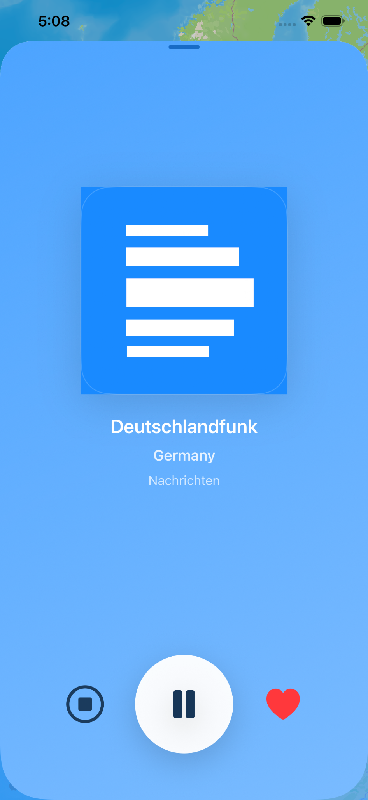

Interactive map browsing
See radio stations and curated places directly on the map, then tap a pin to open its details and start listening.
RadioRoamer is an iPhone app that blends global radio discovery, place-based browsing, lightweight audio playback, favorites, and personal pin media in one focused experience. Tap a map pin, start listening, and keep the soundtrack going with a compact player that stays close at hand.

RadioRoamer keeps the experience focused: one map, one listening flow, and the playback controls you need without overwhelming the screen.
See radio stations and curated places directly on the map, then tap a pin to open its details and start listening.
Play external live streams for stations and bundled local tracks for selected places inside a consistent player flow.
Playback stays within reach while you browse other parts of the app, with quick pause and stop controls on the mini player bar.
Open a larger playback page for artwork, station name, country, current status text, favorite toggling, and transport controls.
Save stations and places you love, revisit them later, and attach your own photos or videos to supported pins.
Keep listening while switching apps, and set a timer when you want the soundtrack to fade out later.

Browse the map, search stations or places, jump to nearby content, shuffle discovery, and keep playback running from the compact mini player.

Open the full player for large artwork, clear station details, simple playback controls, and quick access to favorites.